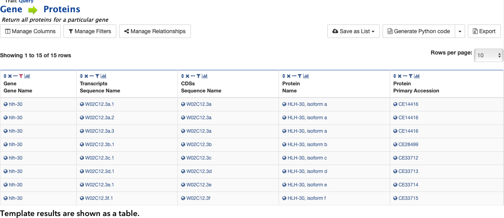

Templates
Templates in WormMine are curated and pre-defined queries that represent some of the most usual searches performed in
the site. Templates are the easiest way to obtain a large amount of information in WormMine, fast. At the moment there
are 25 unique templates available in WormMine, providing well-structure queries for genes, proteins, chromosomes and
other
C. elegans genomic elements, strains, phenotypes, etc.
To run a template just click on the link in the index page and a page with options will be presented.
Select the desired query by clicking on it.
You can either modify some of the
terms, constraints, etc and by clicking on
Show Results will provide the results of the query in table format
(how to manipulate this table can be found
here)

How to run a template in WormMine